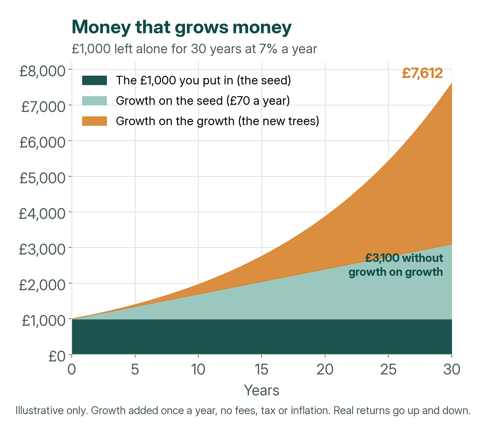
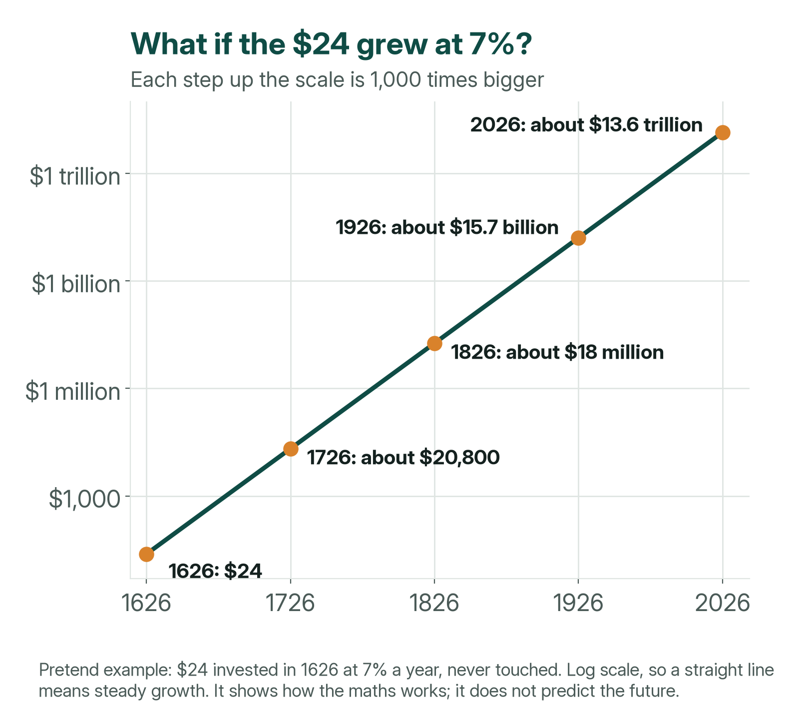
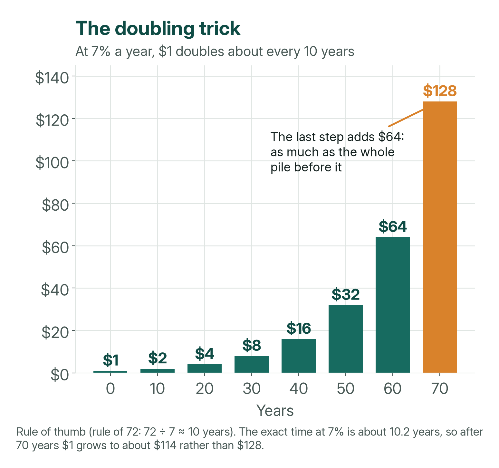
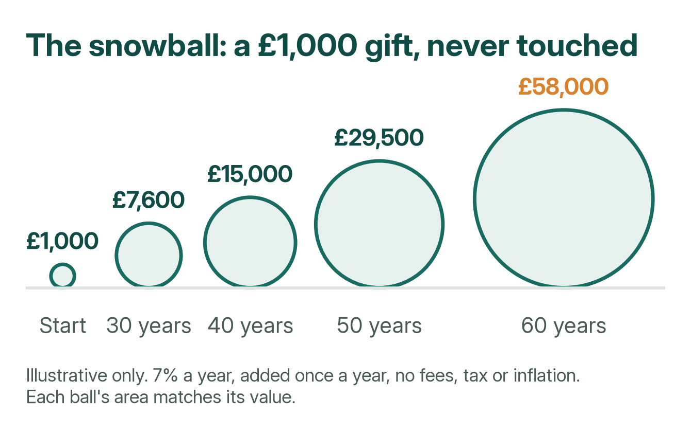
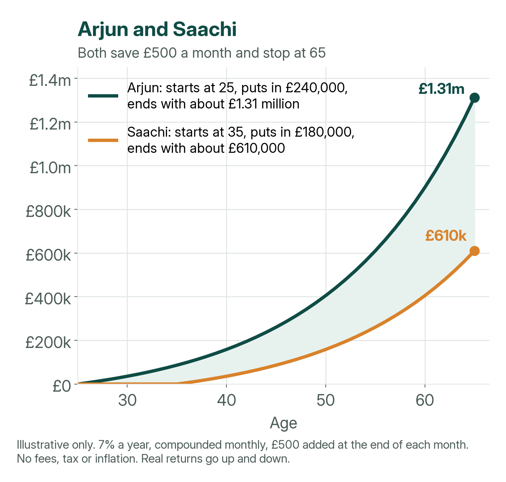
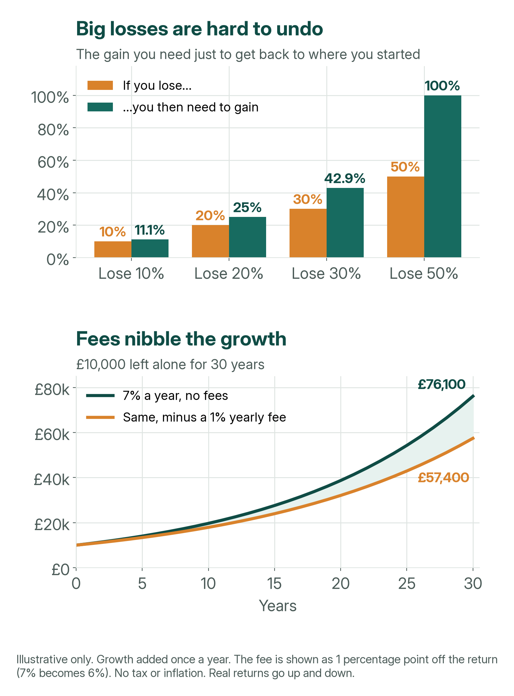
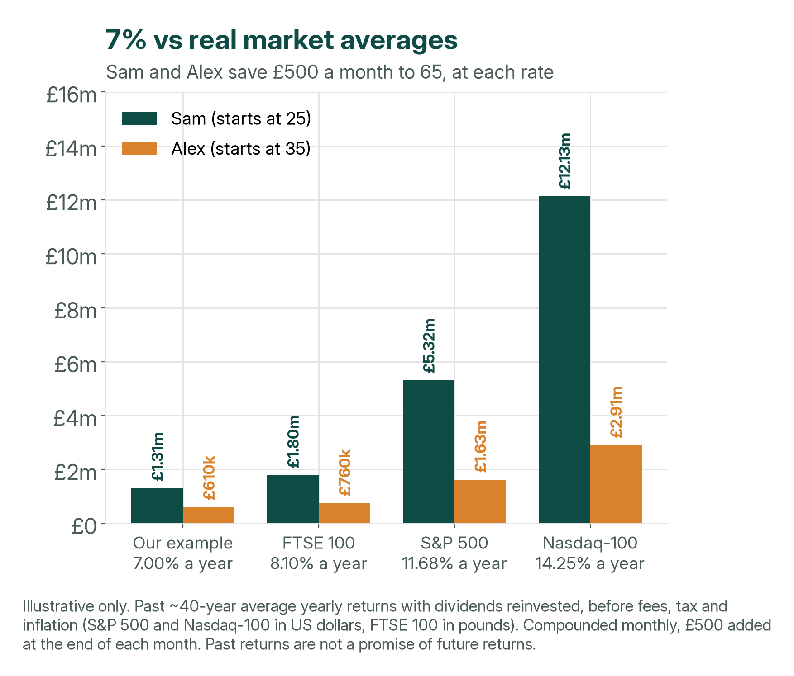

The island that cost $24
In 1626, settlers from the Netherlands got the island of Manhattan. Today it is the busy heart of New York City.
The story says they paid 60 guilders (the Dutch money of the time). Later, people worked out that this was worth about $24. Today, $24 would not even buy one new video game.
Now Manhattan is one of the most expensive places on Earth. Nobody knows the true price that was paid, and historians still argue about it. But it is a great story for learning one big money idea.
A man named Mohnish Pabrai likes to tell this story. He is an investor: his job is growing money by putting it into things like businesses. His point is not about land. It is about a superpower called compounding.
What is compounding?
Plant an apple seed. It grows into a tree, and the tree gives you apples. Plant the seeds from those apples and you get more trees. Each new tree gives even more apples.
Money can work the same way. When you invest money, it can earn more money. Next year, that new money earns money too.
Compounding is growth on top of growth – money having babies, and the babies having babies too.
A snowball is a good way to picture it. A tiny snowball picks up only a little snow. A big snowball picks up lots of snow as it rolls. The bigger it gets, the faster it grows.


What if the $24 earned 7% a year?
Earning 7% a year means that for every $100 you have, you get $7 more by the end of the year. That is not a crazy-high number. But it is not guaranteed either (more on that below).
Imagine the $24 had been invested in 1626, growing by 7% every year and never touched:
| After | Year | About how much | How big is that? |
|---|---|---|---|
| Start | 1626 | $24 | Less than one new video game |
| 100 years | 1726 | $20,800 | A used car |
| 200 years | 1826 | $18 million | A giant lottery prize |
| 300 years | 1926 | $15.7 billion | Billions! |
| 400 years | 2026 | $13.6 trillion | More than almost every country makes in a year |
Worked example: 7% a year, added once a year, never taken out. No tax, fees or inflation.


Here is the surprising part. For the first 100 years, not much seems to happen. In the last 100 years alone, the money grows by more than $13 trillion.
Slow, slow, slow… then WHOA!
The doubling trick
At 7% a year, money doubles about every 10 years. (The exact answer is a little over 10 years.)
There is a handy shortcut for this called the rule of 72. Divide 72 by the yearly growth rate. The answer is roughly how many years it takes to double. At 7%: 72 ÷ 7 ≈ 10 years. At 4%, it would be 72 ÷ 4 = about 18 years.
Start with $1 and watch it climb: $2, $4, $8, $16, $32, $64, $128.


Each step adds as much as the whole pile before it. That is why the end is the most exciting part. The secret ingredient is time.
What can a regular person expect?
Nobody lives for 400 years. But you might invest for 50 or 60 years, and that is plenty of time for the magic to work.
A £1,000 gift, never touched
Imagine someone gives you £1,000 and it grows by 7% a year:
| After | About how much |
|---|---|
| 30 years | £7,600 |
| 40 years | £15,000 |
| 50 years | £29,500 |
| 60 years | £58,000 |


Arjun and Saachi
Arjun and Saachi both save £500 a month and both stop at 65. The only difference is when they start.
| Starts at | Puts in | Has at 65 (about) | |
|---|---|---|---|
| Arjun | 25 | £240,000 | £1.31 million |
| Saachi | 35 | £180,000 | £610,000 |


Saachi waited just 10 years and ended up with about £700,000 less – even though Saachi paid in only £60,000 less. Starting early is the biggest superpower you have.
Worked example: 7% a year, added monthly, with £500 paid in at the end of each month. No fees, tax or inflation. Real returns go up and down.
Three things that break the magic
- Starting late. The last years are the biggest ones, so every year you wait costs you a lot.
- Big losses. Losing money hurts more than you might think. If you lose half, you then need to double what is left just to get back to where you started.
- Taking it out early. If you dig up the tree to check the roots, it stops growing. High fees do the same thing, because they nibble away at the growth.


Passing it down: generational wealth
Generational wealth means money that helps your children, and their children too. Think of the tree: you plant it, but your grandchildren might sit in its shade.
If a family invested £1 million at 7% a year and left it alone, it would grow to about £7.6 million in 30 years. In 60 years it would be about £58 million. (Worked example, no tax, fees or inflation.)
Families that keep their wealth for a long time usually do these things:
- They teach the children. A child who understands compounding starts with a huge head start.
- They spend less than the money grows. If it grows 7% and they take out 4%, the tree keeps getting bigger.
- They keep costs low. Smaller fees mean more growth stays in the tree.
- They own things that grow, like shares (small pieces of businesses), instead of just keeping cash under the mattress.
How does 7% compare with real stock markets?
All the examples so far use 7% a year. It is a simple, middle-of-the-road number. But what have real stock markets actually done?
Here are three famous share indexes. An index is a list of companies whose share prices are tracked together, a bit like one big basket of shares. The figures are their average yearly returns over about the last 40 years, with dividends (the share of profits companies pay out) put back in:
- FTSE 100 – the 100 biggest companies on the London Stock Exchange. About 8.10% a year from its launch in 1984 to the end of 2023, in pounds.
- S&P 500 – about 500 large US companies. About 11.68% a year from 1985 to 2024, in US dollars.
- Nasdaq-100 – 100 of the largest non-financial companies on the US Nasdaq stock market, many of them tech firms. About 14.25% a year from its launch in January 1985 to the end of 2024, in US dollars.
So what would Arjun and Saachi have at 65 at each of these rates? We used exactly the same method as before: £500 a month, paid in at the end of each month, growing monthly. Arjun pays in £240,000 from age 25; Saachi pays in £180,000 from age 35.
| Rate a year | Arjun ends with | Saachi ends with | Gap |
|---|---|---|---|
| 7.00% (our example) | £1,312,000 | £610,000 | £702,000 |
| 8.10% (FTSE 100) | £1,797,000 | £760,000 | £1,036,000 |
| 11.68% (S&P 500) | £5,318,000 | £1,628,000 | £3,690,000 |
| 14.25% (Nasdaq-100) | £12,126,000 | £2,909,000 | £9,217,000 |
Worked example, rounded to the nearest £1,000. No fees, tax or inflation, and the same rate every single year – which never happens in real life.


Two things jump out. First, a few extra percent a year makes a huge difference over 40 years. Second, the later start hurts more as the rate goes up: at the Nasdaq-100 rate, Saachi’s 10-year wait costs about £9.2 million.
- Exchange rates matter. S&P 500 and Nasdaq-100 returns are in US dollars. A UK investor’s returns would also go up or down with the pound-to-dollar exchange rate.
- These are past averages, not a promise. The next 40 years could be very different. Inside these averages were some terrible years: the Nasdaq-100 fell 83% when the tech bubble burst around 2000.
- Real life takes a slice. Fees and tax reduce what you actually keep, and inflation means each pound buys less in the future.
Sources: FTSE 100 – The Guardian, “Footsie turns 40” (2 January 2024) (opens in new tab): £1,000 invested at the 1984 launch, with dividends reinvested, was worth £22,550 after 40 years; that works out at 8.10% a year (pounds). S&P 500 – Aswath Damodaran, NYU Stern, “Historical Returns on Stocks, Bonds and Bills” (data updated January 2026) (opens in new tab): S&P 500 including dividends, yearly returns for 1985–2024, which average out at 11.68% a year (US dollars). Nasdaq-100 – Nasdaq, “Nasdaq-100 Index Celebrates 40 Years of Innovation” (30 January 2025) (opens in new tab): 14.25% a year compound return from 31 January 1985 to 31 December 2024 (US dollars). All are before fees, tax and inflation. Past performance is not a reliable guide to future returns.
Be honest: 7% is not a promise
- 7% is not a promise. Some years the money goes down, not up.
- Prices rise over time (this is called inflation), so money buys a little less each year.
- Nobody really invests for 400 years. The Manhattan story shows how the maths works. It does not predict the future.
- This is information, not financial advice. Before making decisions, speak to a qualified financial adviser.
The big idea
The $24 story is really about this: a small amount, a steady return and lots of time can beat a big amount that gets interrupted.
You cannot control what the market does. But you can control when you start, how much you add, and how long you leave it alone. Plant the seed early, protect it, and let time do the rest.
Assumptions used on this page: a steady 7% a year (except the market comparison, which uses the past averages shown there). Lump sums grow once a year. Monthly saving (Arjun and Saachi) grows monthly, with £500 paid in at the end of each month. Fees, tax and inflation are ignored. All amounts are rounded. These are worked examples, not forecasts.